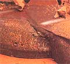
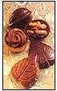
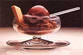
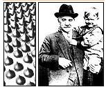
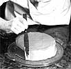
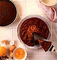

The Physiology of Taste, 1825
AMBERGRIS, A WAXY Sub stance derived from sperm whales, is hard to come by these days. Chocolate, mercifully, is not. Cocoa beans are the third largest international cash crop, after coffee and sugar. While the United States doesn't grow any of those beans, it does lead in the manufacture of chocolate. Americans consume an average of 12 pounds per person per year, which puts them fifth in the world, behind the Swiss (22 pounds), the English (15), the West Germans (14) and the Belgians (13.6). With magazines, newsletters, associations and festivals devoted entirely to its celebration, chocolate has become a sweet obsession.
Food of the Gods
A native of Central America, the cocoa tree has been cultivated for centuries. The Aztecs considered it a gift from Quetzalcoatl, the god of wisdom and knowledge, who gave them the arts, the calendar and chocolate. Cocoa was so valuable that the beans were used as currency: eight for a rabbit, 100 for a slave. What the Aztecs didn't spend they smashed into a paste, then mixed with water or wine for a rather bitter, peppery beverage. Montezuma II adored it. The last emperor of the Aztecs, he drank 50 flagons a day-cold and frothy, seasoned with honey, spices and vanilla (another Central American native).
According to legend, Quetzalcoad bequeathed his gifts and sailed away, promising to return in the year One Reed, which came around every 52 years. Unfortunately for the Aztecs, one such recurrence was A.D. 1519, the year Hernan Cortes landed on the shores of Mexico. Believing the Conquistador to be the returning god, Montezuma welcomed him (with, among other things, cups of chocolate). The invaders learned what they could from the natives, killed Montezuma, razed the high Aztec civilization and sailed back to Spain with their spoils, including beans from the cocoa tree- Theobroma cacao, or "food of the gods."
From the Spanish Court (an international trendsetter in those days) the beverage spread throughout Europe. Soon there were chocolate houses across the continent, where young gentlemen of the upper classes met to gossip, gamble and fashion empires. In Great Britain chocolate became sufficiently popular to rival honest English ale, and brewers and publicans lobbied to ban the import of cocoa (they failed). A century later, even the colonials got wind of the European craze; Massachusetts sea captains sailed to the Caribbean for cocoa. In 1765 Dr. James Baker of Dorchester, Massachusetts, joined forces with John Hannon, an Irish chocolate maker, to establish the first chocolate factory in the United States.
Today, Baker's is the most common form of unsweetened chocolate on the market. From a sweet-toothed point of view, the nineteenth century was momentous. Until then, chocolate had remained exclusively a beverage. The ground-up beans, or chocolate liquor, were far too dry and bitter to eat. But in 1828 a Dutch chemist in search of a better beverage figured out how to extract the cocoa butter, the rich vegetable fat that makes up more than half of the beans. This left cocoa powder (which made an excellent drink) and huge slabs of rich, ivory-colored cocoa butter-too good to waste. The English mixed the butter with more chocolate liquor and gave us eating chocolate.
Henri Nestle, who had founded his. empire by inventing a baby formula and the condensed milk that went into it, teamed up with chocolatier Daniel Peter to create milk chocolate. And in 1893, Milton Snavely Hershey, of blessed memory, attended the Chicago Exposition, observed some German chocolate-making machinery, and decided on the spot to get out of caramels and into chocolate. His factory soon manufactured candy bars on a scale that made them universally affordable, and a small, richly scented town in Pennsylvania became the chocolate capital of America. (If chocoholics are very, very good, when they die they go to Hershey, Pennsylvania.)
Food of Love
Since the days of the Aztecs, chocolate has been considered an aphrodisiac. Montezuma always downed a flagon or two before venturing into his harem. In a seventeenth century treatise, Englishman James Wads worth promised: 'Twill make Old Women Young and Fresh, Create New Motions of the Flesh, And cause them long for you know what, If they but taste of chocolate. Eighteenth-century courtesans stirred their lovers' (or their own) ardor with cups of chocolate, and Casanova, who probably needed to, drank it daily and offered it to the ladies. Some ideas die hard. Recently, researchers noticed that chocolate is packed with phenylethylamine (PEA), a chemical that is also present in the human brain and which plays a powerful role in emotional arousal.
Oh, is that why lovers exchange Valentine candy, why the newly lovelorn disappear into five-pound boxes of Godiva? Could sexuality and chocolate really be intimately related? Eager volunteers at the National Institute of Mental Health gorged themselves on chocolate and got . . . headaches. (Not tonight.)
The PEA levels in their brains did not rise, nor did their emotional temperatures. Thus the age-old question remains: Is chocolate a substitute for sex? Or is sex a substitute for chocolate? Making It
Cocoa trees thrive within 20 degrees of the equator, on the great cocoa plantations of Central and South America, Africa and Malaysia. Strikingly attractive, the 25-foot trees have glossy, foot-long leaves, lavender or red when young, dark green when mature. The football-shaped pods-12 inches long and five inches in diameter, hard and woody-sprout directly from the trunk or main branches and ripen to golden or scarlet. Inside the ripe pods, embedded in sticky pulp, are 25 to 50 lavender or white seeds (or beans), each about an inch in diameter. Exposed to air, the beans ferment, losing some of their raw, bitter taste. After 10 days or so, they're packed and shipped to factories around the world. There the beans are roasted and cracked open, revealing the nibs (pay dirt), which are ground by huge rollers.
In the heat of this process, the cocoa butter melts, producing a semi-liquid mass. Poured into molds, this chocolate liquor becomes unsweetened (or baking) chocolate. Further processed, the liquor becomes two other products. Most of the cocoa butter is extracted, leaving a dry "press cake," which is then finely ground for cocoa. The cocoa butter is added to more chocolate liquor, along with sugar, vanilla (usually) and, in the case of milk chocolate, milk. (White chocolate consists of cocoa butter, milk and sugar; since it contains no liquor, the FDA doesn't define it as chocolate at all.) Now tasty but grainy, the mixture is refined through several sets of rollers, then "conched"-stirred and kneaded for up to 72 hours, until it's silky smooth. (Cheaper brands short-cut this step and so lack the fine texture of quality chocolate.)
Finally, it's cooled and poured into molds.
Cooking With It Like wine, chocolate makes its quality felt in the finished product; the flavor comes through. In other words, all chocolate may be wonderful, but some kinds are more wonderful than others. Short of exhaustive sampling, there are several ways to recognize the good stuff: • It has a smooth, glossy sheen.
• It breaks cleanly and firmly, without crumbling.
• It smells of chocolate, not cocoa, with a full, rounded aroma.
• It melts like butter in the mouth, without sticky clinging, gritty feel or any aftertaste. o The flavor is fine, delicate and distinctive.
Storing. Chocolate should be kept cool and dry, at about 68° to 78°F. If it gets too cold (as in a refrigerator), it will "sweat" when brought back to room temperature. Kept too warm, it will "bloom"-develop a whitish, marbled look, because some of the cocoa butter has separated out and risen to the surface. (It isn't ruined for cooking; it just looks unappetizing.)
Grating. Especially in small amounts, it's easiest to grate chocolate by cutting it finely with a large chef s knife. This is an instance when the food processor doesn't earn its clean-up time.
Melting. If cooking with chocolate goes awry, it's usually in the melting process. Two things can turn the good stuff bad: a little moisture and a lot of heat. If one drop of water gets into melting chocolate, it "tightens"-hardens, stiffens-and turns grainy. So containers and utensils must be bone-dry, and the chocolate must remain uncovered while it's melting. (Steam may condense on the lid and drop back into the pan.) A lot of liquid-at least one tablespoon to each ounce of chocolate-is no problem. It's a trace of moisture that causes trouble. High temperatures are disastrous. Not only will the chocolate tighten, but it will burn and turn bitter over any but the gentlest heat. Several devices keep the heat slow: • The top of a double boiler, over hot but not boiling water.
• A heavy saucepan over the lowest possible heat.
• A warm oven.
• For small amounts, a custard cup set in a shallow pan of hot water.
• A microwave oven. Place the chocolate in a microwave-safe container, uncovered, and microwave on medium (50 % power) for the recommended time: 6 ounces semisweet bits: 2 to 3 minutes
12 ounces semisweet bits: 4 to 5 minutes
1 or 2 one-ounce squares: 1 to 2 minutes
3 one-ounce squares: 2 1/2 to 3 minutes In all cases, start at the lowest time and increase the cooking by 30-second intervals until the chocolate is melted. It's easy to miss the fact that it has done so. Melted chocolate will feel warm, not hot, to the touch, and will retain its shape. When stirred, it will become a smooth, shiny paste. If there are still some hard, shiny pieces left that won't soften, it's underdone; heat it a little longer. If the paste has some hard, non shiny pieces and a scorched, bitter smell, it's overcooked. Just throw it out and start over.
Eating It
86- PROOF
CHOCOLATE CAKE
RECIPE FROM MAIDA
HEATTER'S BOOK OF
GREAT DESSERTS,
BY MAIDA HEATTER,
COPYRIGHT ©BY
MAIDA HEATTER,
REPRINTED BY
PERMISSION
OF ALFRED
A. KNOPF, INC.
A 1.65-ounce Hershey Bar contains some thiamine, riboflavin, iron, calcium and (let's get down to it) 250 calories-more than a stalk of celery but fewer than a roast ox. Its 14 grams of fat provide 50% of its calories-a fact that, with luck, will escape the attention of the Surgeon General, who insists that only 30% of our total daily calories should come from fat. On the other hand, it is not lost on chocolate lovers that Montezuma II, the original chocoholic, drank 50 flagons a day and died, not from hardening of the arteries, but at the hands of alien invaders. Life is a risky proposition, at best.
Melt chocolate in a medium double boiler over hot water. Add boiling water and mix well. Stir in milk and cream, then the sugar, spices and salt. Whisk mixture over medium low heat until it comes to a boil, reduce heat to simmer, and cook for 5 minutes, whisking continuously. In a separate bowl, beat egg with vanilla until frothy. Add a little of the hot chocolate (reheat it if necessary) to the egg, stir well, then add egg to the remaining chocolate. Beat with electric hand mixer or rotary beater for 3 minutes over low heat. Pour into coffee cups and serve immediately. Serves 4.
A mousse should be made at least one day ahead. It can sit as long as three or four days.
12-ounce package semisweet chocolate bits
1/2 cup water
1 stick butter
4 tablespoons dry instant coffee
10 tablespoons dark rum or brandy (flavored brandies, such as apricot, also work well)
2 cups heavy cream
Melt chocolate with water in medium double boiler or saucepan. Add butter, instant coffee and rum, and stir until mixture is smooth. Cool. Whip cream, then fold cooled chocolate mixture into whipped cream (mixture will be runny). Pour into small souflle dish, individual custard cups or coffee cups. Chill overnight. Serves 6-8.
Adjust rack 1/3 up from the bottom and preheat oven to 325°F. Butter a 9" Bundt pan (or any other tube pan with a 10-cup capacity), then dust it with fine, dry bread crumbs; shake out excess, and set aside. Melt chocolate in top of small double boiler over hot water; set aside. Sift together flour, baking soda and salt. In a 2-cup glass measuring cup dissolve coffee in a bit of boiling water.
Add cold water to the 1 1/2 cup line. Add bourbon. Set aside. Cream butter in large bowl; add vanilla and sugar, and beat to mix well. Add eggs one at a time, beating until smooth after each addition. Add chocolate and beat until smooth. On low speed, alternately add the sifted dry ingredients in three additions with the liquids in two additions, adding liquids very gradually to avoid splashing, and scraping the bowl with a rubber spatula after each addition.
It will be a thin mixture. Pour into the prepared pan. Rotate pan a bit briskly, first in one direction, then in the other, to level the top. Bake for 1 hour and 10 or 15 minutes, or until a cake tester comes out clean. Cool in pan about 15 minutes, then cover with a rack and invert. Remove pan, sprinkle with a bit of bourbon (optional), and leave the cake upside-down on the rack to cool. If desired, sprinkle the top with powdered sugar through a fine strainer.
|
 Montezuma II, emperor and chocoholic |
 Milton Hershey began manufacturing Kisses in 1907. |
 Chocolate cake with chocolate icing: Why settle for half measures? |
|
Cut yourself a slice, and get ready to make an emotional commitment. |
 |
 |
|
 |
|
|